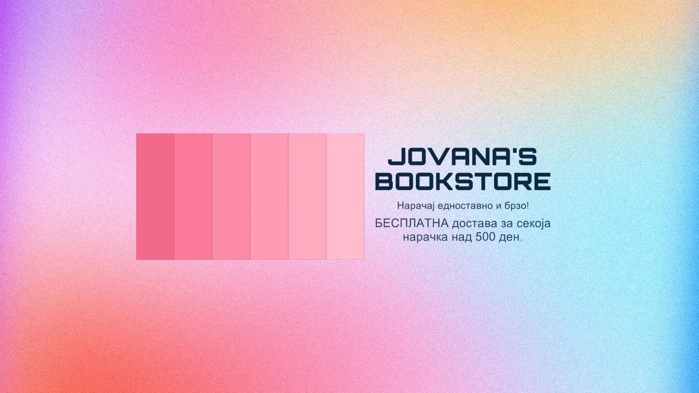

Дома
Книги
Споменот на него од Колин Хувер
(Reminders of Him by Colleen Hoover)
По отслужувањето затворска казна од пет години за трагична грешка од минатото, Кена Роуан се враќа во градот каде што се случила
трагедијата, надевајќи се дека ќе добие втора шанса со својата четиригодишна ќерка. Но се покажува дека е невозможно одново да се
изградат мостовите кои ги изгорела во минатото. Сите во животот на ќерка и се цврсто решени да не и дозволат на Кена да и се доближи,
без разлика колку таа се труди да се докаже.
Единствената личност која не и ја затвора целосно вратата е Леџер Ворд, сопственик
на локален бар и една од малкуте преостанати личности кои ја поврзуваат со ќерка и. Но ако некој дознае дека Леџер полека станува важен дел
од животот на Кена, двајцата ризикуваат да ја изгубат довербата на сите кои им се битни.
Нивната блискост расте и покрај притисоците
околу нив, но истовремено расте и ризикот. Кена мора да најде начин да се искупи за грешките од минатото ако сака да изгради иднина во
која ќе има надеж, исцелување и простување.
Рецензии: Читај книга,
She reads romance books, Debra reads
Цена: 490 ден.
Сите твои совршености од Колин Хувер
(All your perfects by Colleen Hoover)
Колин Хувер се надминува себеси со моќна приказна за еден совршен брак и едно старо, речиси заборавено ветување што би можело да го спаси.
На совршената љубов на Квин и Грахам и се заканува нивниот несовршен брак. Спомените, грешките и тајните што се трупале низ годините сега ги
влечат на различни страни и уште повеќе ја зголемуваат дистанцата меѓу нив. Единственото нешто што би можело да ги спаси е токму онаа работа
што ги има донесено до работ на пропаста.
Сите твои совршености е срцепарателна, емоционална и моќна приказна за пар чија потенцијална
иднина се држи на шарките на ветувањата дадени во минатото. Додека без престан ги голтате страниците, ќе се прашувате: Може ли една силна љубов
со совршен почеток да живее цел живот меѓу двајца несовршени луѓе?
Рецензии: Читателка,
Floweringpages, Aestas book blog
Цена: 400 ден.
Сурова љубов од Колин Хувер
(Ugly love by Colleen Hoover)
Кога Тејт Колинс го запознава пилотот Мајлс Арчер, знае дека тоа не е љубов на прв поглед. Тие не можат да се однесуваат дури ни како пријатели.
Единственото заедничко нешто им е непобитната взаемна привлечност. И кога ги отвараат картите, сфаќаат дека тоа им одговара на двајцата. Тој не
сака љубов. И нивниот договор може да е незамисливо едносатавен ако Тејт успее да се држи до единствените две правила што Мајлс ги има за неа.
Никогаш не поставувај прашања за минатото. Не очекувај иднина.
Двајцата се убедени дека можат да се носат со овој договор,
но речиси веднаш сфаќаат дека не можат.
Се кршат ветувања. Се кршат правила. Се кршат срца...
Љубовта станува сурова.
Рецензии: Mrs B's Book Review,
The college reporter, BOOKGEEKS
Цена: 400 ден.
It ends with us by Colleen Hoover
(Ова завршува со нас од Колин Хувер)
SOMETIMES THE ONE WHO LOVES YOU IS THE ONE WHO HURTS YOU THE MOST
Lily hasn't always had it easy, but that's never stopped her from working
hard for the life she wants. She's come a long way from the small town in Maine where she grew up - she graduated from college, moved to Boston, and started her own business.
So when she feels a spark with a gorgeous neurosurgeon named Ryle Kincaid, everything in Lily's life suddenly seems almost too good to be true.
Ryle is assertive,
stubborn, and maybe even a little arrogant. He's also sensitive, brilliant, and has a total soft spot for Lily, but Ryle's complete aversion to relationships is disturbing.
As questions about her new relationship overwhelm her, so do thoughts of Atlas Corrigan - her first love and link to the past she left behind. He was
her kindred spirit, her protector. When Atlas suddenly reappears, everything Lily has built with Ryle is threatend.
With this bold and deeply personal novel, Colleen Hoover
delivers a heart-wrenching story that breaks exciting new gorund for her as a writer. It Ends With Us is an unforgettable tale of love that comes at the ultimate price.
Рецензии: BOOKGEEKS,
Mrs B's Book Review, Kirkus reviews
Цена: 799 ден.
Можеби треба да разговараш со некого од Лори Готлиб
(Maybe you should talk to someone by Lori Gottlieb)
Откривањето на тешките вистини си има своја цена, но и неспоредлива награда: слабоста.
Мудри и забавни записи на психотерапевтката чии книги „Њујорк тамјс“ постојано ги прогласува за
бестселери. Готлиб храбро ни го открива својот живот, и како психотерапевт и како пациент, следејќи ги вистините и лагите што си ги укажуваме себеси и на другите растргнати меѓу љубовта и омразата,
вината и прошката, стравот и храброста да се впуштиме во промени.
Иако се поотворено разговараме на теми кои некогаш се сметаа за многу интимни, штом ќе се споменат анксиозноста и депресијата,
веднаш замолчуваме. Затоа секому му треба ваква книга - толку искрена што прераснува во бунт со стереотипите.
Врвен психотерапевт кој им помага на луѓето да го изведат животот на прав пат, еден
ден Лори Готлиб и самата запаѓа во ќор-сокак. Кога целиот нејзин свет се распаѓа, во нејзиниот живот влегува Вендел, терапевт од кого ќе побара помош. Зашто секому, па дури и на оној кој ги решава проблемите
на другите, му е потребен човек пред кој ќе може да ја покаже својата ранливост - и да поразговара со него.
Рецензии: The New York Times,
Stanford magazine, Kirkus reviews
Цена: 600 ден.
Намести си го креветот од Вилијам Х. Мекрејвен
(Make your bed by William H. McRaven)
Ако сакате да си го промените животот кон подобро, почнете со тоа што наутро ќе си го наместите креветот! Вака адмирал Вилијам Х. Мекрејвен ги советува студентите од Универзитетот во Тексас на првиот ден од
студиите. Црпејќи инспирација од универзитетскиот слоган „Она што започнува овде ќе го смени светот“, тој ги споделува со нив своите десет начела научени за време на обуката во Американската воена морнарица,
кои му помогнале да ги надмине предизвиците не само во долгата кариера, туку и во животот.
Во оваа своја мала но вдаховена книга тој објаснува како секој може да ги искористи овие основни и едноставни
лекции за да се промени себеси - а можеби и светот. Пренесувајќи ни ги своите суштински начела, Мекрејвен раскажува потресни и инспиративни приказни од својот живот и од животите на луѓето што ги запознал за време
на воената обука и служба, кои понекогаш морале одлучно, сочувствено, чесно и смело да донесат тешки одлуки.
Раскажана со неверојатен оптимизам, Намести си го креветот нуди едноставни мудрости, практични
совети и охрабрување што не инспирираат да работиме и да оствариме повеќе во својот живот, дури и во неговите најмрачни моменти.
Рецензии: The power moves,
BookLab by Bjorn, Bumblebee collective
Цена: 250 ден.
Внесете податоци
Најава
Веќе сум најавен
Профил